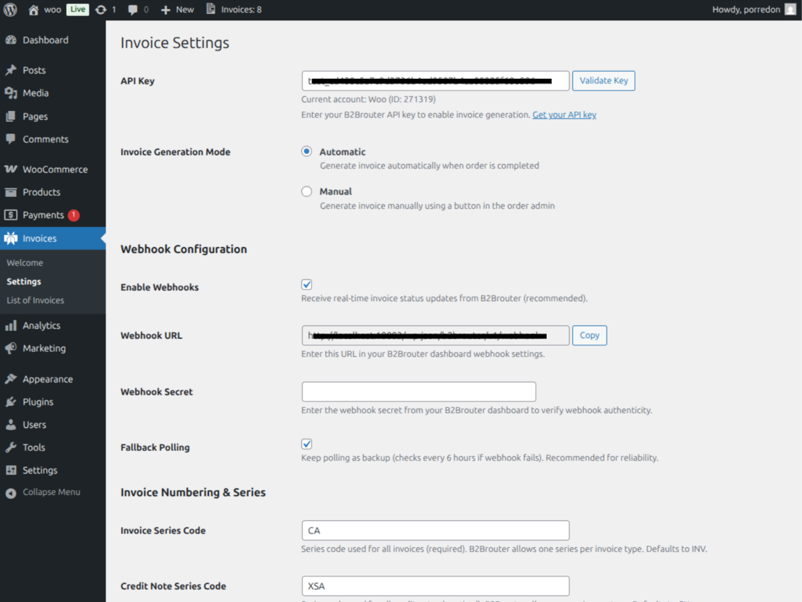
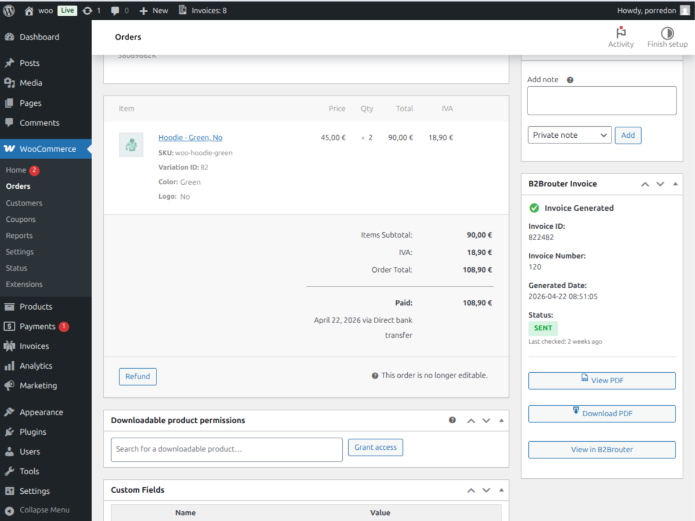
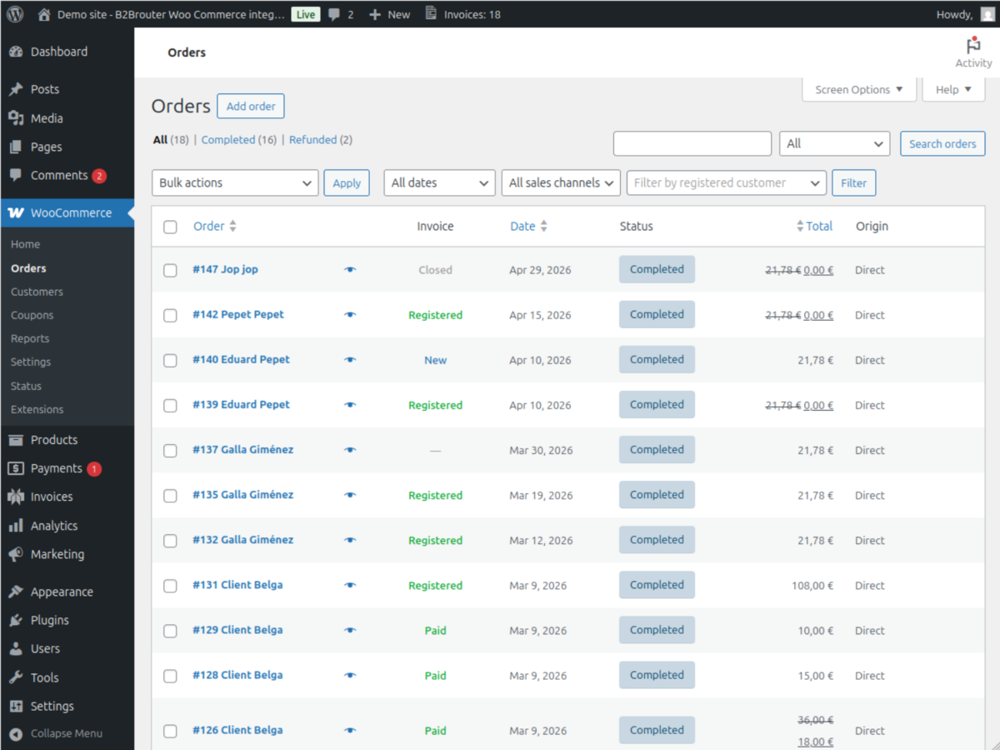
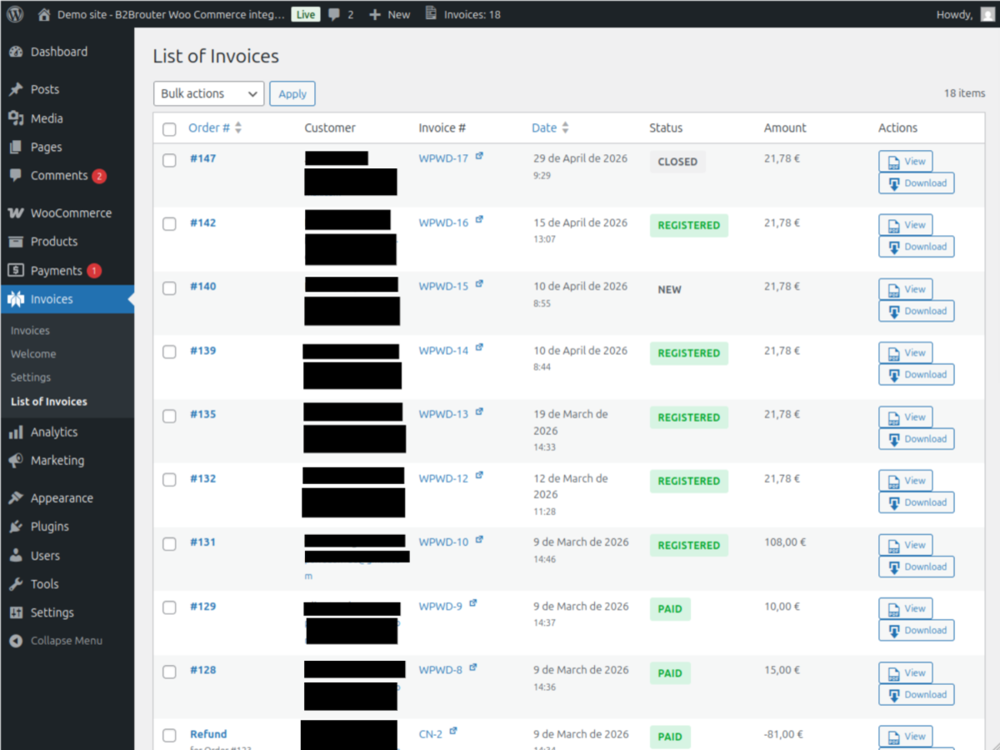
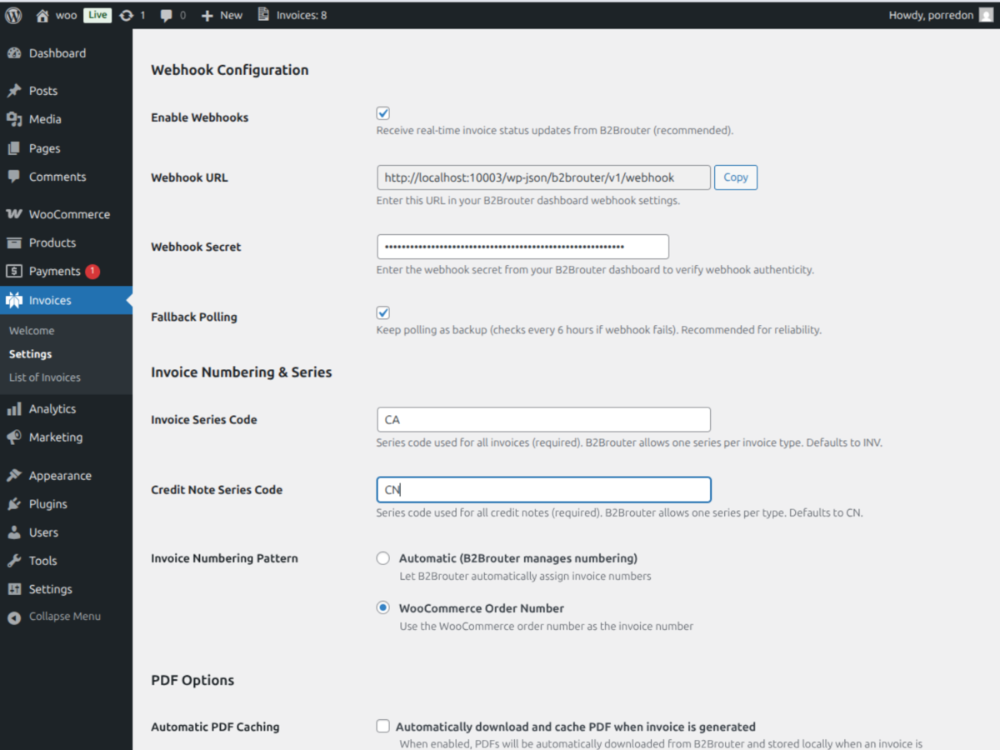
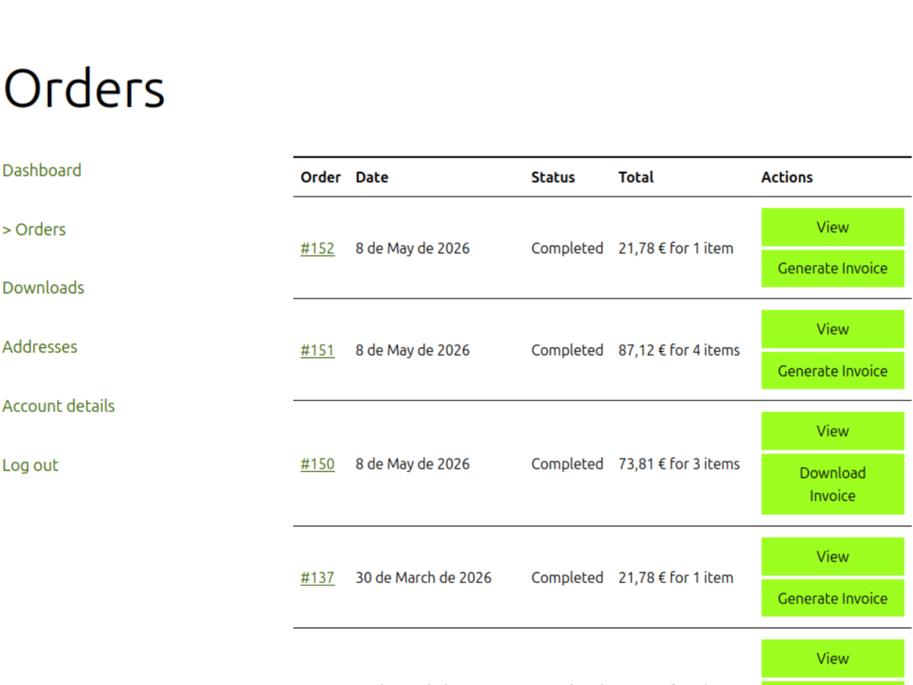

Issues invoices automatically
When an order moves to «Completed», the plugin sends the data to B2Brouter and generates the electronic invoice in the right format. You can also issue them manually from the order screen, one by one or in bulk.
Connect your store to B2Brouter and generate the invoice as a PDF and in structured electronic format, compliant with your country's regulations. No spreadsheets, no intermediaries, no reconfiguring on every order.
Open source · MIT license · WordPress 5.8+ · WooCommerce 5.0+ · PHP 7.4+
More and more European Union countries require electronic invoices for transactions. Regulations change often, and complying manually means hours of accounting work, errors, and the risk of penalties.
Tax authorities introduce new formats, identifiers, and requirements every year. Staying up-to-date takes time you don't have.
More and more companies only accept invoices in formats like UBL, Facturae, or Peppol. A PDF invoice is no longer enough.
Generating invoices outside your order system causes duplicates, transcription errors, and extra work month after month.
B2Brouter plugin saves you all that by automating electronic invoice generation directly from your WooCommerce store.
When an order moves to «Completed», the plugin sends the data to B2Brouter and generates the electronic invoice in the right format. You can also issue them manually from the order screen, one by one or in bulk.
The plugin sends invoices through the correct channel for each country: tax authority reporting, QR verification code, official buyer identifiers… Everything the law requires, without touching a thing.
Every invoice generates its PDF automatically: attached to order completion emails, downloadable from the «My Account» area, and cached locally for fast access.
When you create a refund in WooCommerce, the corresponding credit note (rectifying invoice) is generated, linked to the original invoice and in the format the country requires.
If your store sells in a country where electronic invoicing is mandatory (or will be soon), the plugin automatically handles the registration with the relevant tax authority, the QR verification code, and every specific requirement.
If you sell to customers in other EU countries, the plugin automatically detects reverse-charge, collects the VAT number at checkout, and generates invoices in standard formats (UBL, Peppol) accepted by any European buyer.
If you issue dozens or hundreds of invoices a month, let the plugin do the work: automatic issuance on order completion, bulk processing, locally cached PDFs, and real-time status sync for every invoice.
The plugin distinguishes two levels of compliance:
For these national regimes, the plugin handles the full flow required by law, including reporting to the relevant tax authority:
Automatic reporting to the AEAT with a QR verification code on every invoice issued.
Routing through the official PPF / Chorus Pro infrastructure.
Automatic submission of invoices to the national KSeF system.
For the rest of the European Union, the United Kingdom, and other jurisdictions supported by B2Brouter, the plugin generates electronic invoices in standard formats: UBL, Facturae, and Peppol. Compatible with most invoice reception portals and platforms.
Your country isn't listed? Open an issue on GitHub →
Attaching a PDF to the customer's email is not enough. True e-invoicing requires three more things:
The same invoice, also in a format that the customer's systems (and tax authorities) can read automatically: UBL, Facturae, Peppol BIS, Factur-X…
Each recipient has its channel: the Spanish AEAT, Chorus Pro in France, KSeF in Poland, the Peppol network for the rest of Europe, or the end customer's email. The plugin sends the invoice to the right channel, not just generates it.
When the tax authority validates the invoice or the buyer receives it, the plugin updates the status in your store in real time (via webhooks). You always know what's happened with every invoice issued.
Most invoicing plugins focus only on generating the PDF — perfect if that's all you need. When your store must comply with national e-invoicing regulations or want to accept B2B orders from anywhere in Europe, all four layers are needed. This plugin handles them all.
Download the latest version's ZIP and install it like any WordPress plugin (Plugins → Add New → Upload). Dependencies are already bundled in the ZIP.
Under «Invoices → Settings», paste your API key and click «Validate». If you don't have an account yet, you can create one at app.b2brouter.net.
Automatic (issue the invoice when the order moves to «Completed») or manual (issue it on demand from each order). You can switch modes whenever you want.
The TIN/VAT field appears automatically at checkout, invoices are issued when they should be, and customers receive the PDF by email. You don't have to touch anything else on each order.






PDF invoice plugins generate the document locally from a template and attach it to the customer's email. It's useful when all you need is a PDF receipt for your orders.
This plugin goes further: it connects with the B2Brouter platform, which in addition to generating the PDF also issues the invoice in structured electronic format (UBL, Facturae, Peppol), delivers it to the right channel for each country (the relevant tax authority, the Peppol network, etc.), and tracks the status of every invoice. It's what you need if your store must comply with national e-invoicing regulations or sell B2B across Europe.
Yes. The plugin requires an active B2Brouter eDocExchange subscription. You can create your account and get the API key at app.b2brouter.net (under «Developers → API Keys»).
Authority-specific configuration is managed from your B2Brouter webapp, not from the plugin. Once the webapp is configured, the plugin automatically sends invoices through the correct channel.
Yes. Beyond the regimes with explicit compliance (Spain, France, Poland), the plugin generates electronic invoices in standard formats (UBL, Facturae, Peppol) for the rest of the EU, the United Kingdom, and other jurisdictions supported by B2Brouter. If you need explicit compliance for another country, open an issue on the repository.
The plugin sends each order's data to B2Brouter and the platform automatically generates the right format for the recipient. You don't have to choose anything on each order.
The main formats issued: PDF (always, for human readability), UBL 2.1 (international standard, the base for Peppol BIS), Facturae (Spain's official format, accepted by FACe and other public sector portals), and country-specific formats when required by national regulations — for example, Factur-X for Chorus Pro in France, or the format required by Verifactu (Spain) and KSeF (Poland).
Yes. The electronic invoices generated through the plugin follow the EN16931 standard, the European semantic standard that defines the fields and structure an electronic invoice must have to be interoperable across the European Union.
EN16931 is the foundation of Directive 2014/55/EU (mandatory e-invoicing in public procurement), the Peppol BIS Billing 3.0 format, and the main national e-invoicing regimes the plugin handles.
Yes. B2Brouter is a certified Peppol Access Point, so you can issue and deliver invoices through the Peppol network directly from your store, without having to hire any other provider.
The plugin generates the invoice in Peppol BIS Billing 3.0 format and B2Brouter routes it to the correct recipient within the network. Especially useful if you sell to companies, public sector buyers, or large European portals that only accept invoices via Peppol.
Yes. The plugin declares full compatibility with the WooCommerce HPOS / Custom Order Tables system.
Yes. It works on both the classic checkout (shortcode) and the block checkout (WooCommerce 8.6+). The value is saved to the order and to the customer profile for reuse on future orders.
Enable webhooks under «Invoices → Settings → Webhook Configuration». Copy the generated URL into your B2Brouter webapp («Developers → Webhooks») and paste the secret into WordPress. Updates arrive in under a second.
The plugin is free and open source (MIT license). The cost is the B2Brouter subscription, which depends on the volume of invoices issued.
Download the plugin and have your first electronic invoices issued today.
Download the latest version